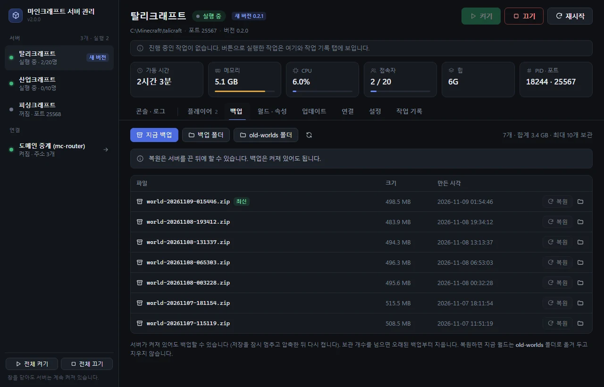

프로그램 두 개
-
마인크래프트 서버 관리 서버를 여는 사람
한 PC에서 도는 서버 여러 개와 도메인 중계(mc-router)를 한 창에서 켜고 끄고 지켜봅니다. 백업 · 복원 · 접속자 관리 · 서버 설정, 그리고 새 버전이 나오면 업데이트까지 버튼 하나로 합니다.
-
모드팩 업데이트 친구 서버에 들어가는 사람
Modrinth App으로 플레이하는 사람용입니다. 새 버전이 나와도 모드팩을 다시 가져올 필요 없이, 쓰던 인스턴스를 그대로 둔 채 모드만 최신으로 바꿉니다. 쓰는 법 보기
서버 관리로 하는 일
-
켜기 · 끄기 · 재시작
서버마다 따로, 또는 전체 켜기 · 전체 끄기로 한 번에. 창을 닫아도 서버는 꺼지지 않습니다.
-
실시간 상태
가동 시간 · 메모리 · CPU · 접속자 · 힙을 카드로 봅니다. 왼쪽 목록에서 서버별 상태와 새 버전 여부도 한눈에.
-
로그와 콘솔
로그를 실시간으로 따라가고, 경고 · 오류만 걸러 봅니다. 명령은 RCON으로 바로 보냅니다.
-
플레이어
접속 중 · 화이트리스트 · OP 목록을 보고, 추가 · 제거 · 강퇴를 버튼으로 합니다.
-
백업과 복원
켜진 채로 백업하고, 고른 백업으로 한 번에 되돌립니다. 지금 월드는 지우지 않고
old-worlds폴더로 옮겨 둡니다. -
서버 설정과 새 월드
server.properties를 화면에서 고칩니다. 화이트리스트 · 난이도는 켜져 있어도 바로 적용됩니다. 시드를 넣어 새 월드도 만듭니다. -
주소와 DDNS
도메인 중계(mc-router)로 서버마다 주소를 하나씩 둡니다. DuckDNS 주소는 집 IP가 바뀌어도 알아서 갱신합니다.
-
자동 시작 · 자동 백업
PC를 켜면 서버가 켜지고, 정해 둔 시간에 백업하도록 작업 스케줄러에 등록합니다.
새 버전은 버튼 한 번
업데이트 탭은 서버마다 설치된 모드 버전을 releases 저장소의 최신 릴리스와 비교합니다. 새 버전이 보이면 '업데이트' 한 번으로 아래 순서가 이어집니다.
- 백업지금 월드를 먼저 남겨 둡니다
- 게임 안 공지접속 중인 친구에게 새 버전과 모드팩 받는 곳을 알립니다
- 서버 모드 교체릴리스 모드팩에서 서버용 모드만 골라 넣습니다
- 다시 켜기서버가 새 버전으로 다시 열립니다
서버마다 '자동'을 켜 두면, 이 창이 열려 있는 동안 접속자가 0명일 때 스스로 업데이트합니다. 실패한 버전은 자동으로 다시 시도하지 않습니다.
화면
콘솔 화면은 실제 서버, 나머지는 시험용 데이터로 찍은 화면입니다.

로그는 실시간으로 따라가고, '경고 · 오류만'으로 걸러 볼 수 있습니다. 명령은 아래 칸에서 RCON으로 보냅니다.

접속 중인 사람이 있으면 잠시 끊긴다는 것과, 플레이어도 모드팩을 새 버전으로 바꿔야 한다는 것을 같이 알려 줍니다.

서버가 켜져 있어도 백업할 수 있습니다. 보관 개수를 넘으면 오래된 백업부터 지웁니다.
모드팩 업데이트 플레이어용
Modrinth App으로 탈리크래프트 · 산업크래프트 · 피싱크래프트를 하는 사람을 위한 프로그램입니다. 새 버전이 나와도 쓰던 인스턴스와 설정은 그대로 두고, 모드만 최신으로 바꿉니다.
-
설치
아래 버튼에서
ModpackUpdater-Setup-버전.exe를 받아 설치합니다. - 업데이트 누르기 열면 Modrinth App의 인스턴스를 알아서 찾습니다. 게임을 끈 상태에서 '업데이트'를 누르면 끝.
- 자동 업데이트 선택 '자동 업데이트 설정'에서 명령을 복사해 Modrinth App에 붙여 넣으면, 그다음부터는 플레이를 누를 때마다 알아서 맞춥니다.
Windows 10 · 11. 처음 실행할 때 Windows가 'PC 보호' 경고를 띄우면 '추가 정보 → 실행'을 누릅니다.
자동 업데이트 명령 붙여 넣기
- 모드팩 업데이트에서 인스턴스 옆 자동 업데이트 설정 → 명령 복사를 누릅니다.
- Modrinth App에서 그 인스턴스를 열고 설정(톱니) → 실행 훅 (Launch hooks) → 실행 전 (Pre-launch) 칸에 붙여 넣습니다.
- 저장합니다. 이제 플레이를 누르면 게임이 켜지기 직전에 조용히 최신 버전으로 맞춥니다.
새 버전이 없으면 바로 넘어가고, 인터넷이 끊겼거나 실패해도 게임은 그대로 켜집니다.
-
인스턴스는 그대로
설정 · 키 배치 · 리소스팩 · 싱글 월드가 그대로 남습니다. 바뀌는 것은 모드 파일뿐입니다.
-
옛 파일은 따로 보관
바꾼 모드의 옛 파일은 지우지 않고 인스턴스 안
.mod-backup폴더로 옮깁니다. 직접 넣은 다른 모드는 건드리지 않습니다. -
받은 파일은 확인하고
새 모드팩은 sha256으로 내용이 맞는지 확인한 뒤에 씁니다.
-
마인크래프트 버전이 바뀔 때
새 버전이 마인크래프트나 Fabric 버전까지 바꾸면 제자리에서 바꾸지 않고, '새로 설치'로 새
.mrpack을 Modrinth App에서 엽니다. -
서버에서 튕겼다면
서버에 들어가다 버전이 다르다는 메시지가 나오면 이 페이지로 오라는 뜻입니다. 모드팩 업데이트로 맞춘 뒤 다시 접속하세요.
-
Prism Launcher를 쓴다면
산업크래프트의 Prism 인스턴스는 켤 때마다 스스로 맞추므로 이 프로그램이 없어도 됩니다.

설치된 인스턴스와 게임별 최신 버전이 보입니다. '베타 포함'을 켜면 테스트 베타도 최신으로 칩니다.

명령은 인스턴스마다 다릅니다. 인스턴스를 여러 개 쓰면 각각 복사해 붙여 넣으세요.
서버 관리 쓰려면
- 릴리스에서
MCServerManager-Setup-버전.exe를 받아 설치합니다. 화면은 Windows 10 · 11에 기본으로 들어 있는 WebView2로 그립니다. - 처음 열면 서버 폴더를 찾아 목록을 만듭니다. 서버는 설정 탭에서 더하고 빼고 이름을 바꿀 수 있습니다.
- 업데이트 탭 아래 내 클라이언트에서는 이 PC의 Modrinth App 인스턴스도 모드팩 업데이트와 똑같이 맞출 수 있습니다.
탈리크래프트 · 산업크래프트 · 피싱크래프트 서버를 한 PC에서 여는 데 맞춰 만든 프로그램입니다. 서버를 켜 둔 채 창을 닫으면 '창만 닫기'와 '모든 서버 끄고 닫기' 중에 고릅니다.